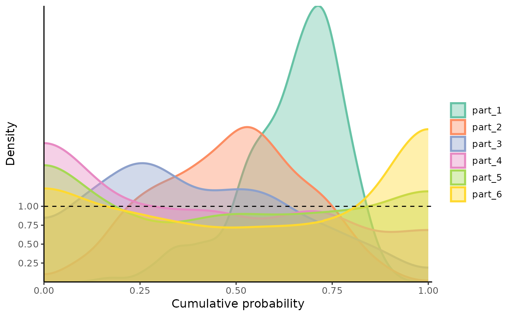
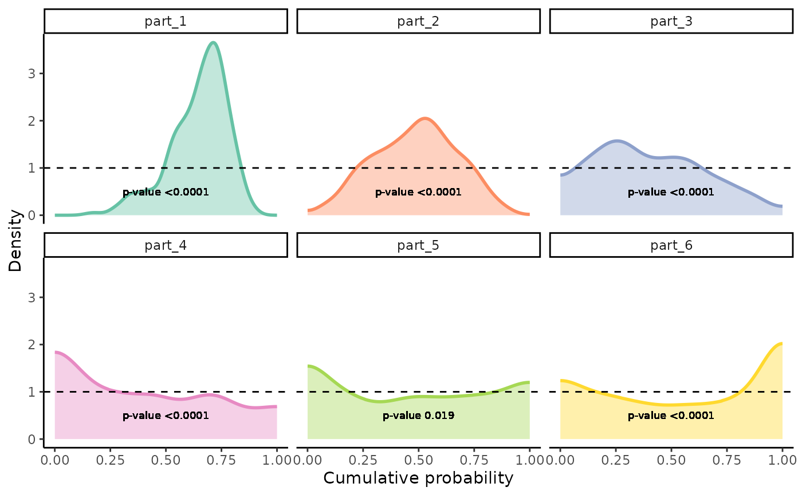

Plots Density Distributions of PIT-values for Global Calibration Diagnostics
Source:R/gg_PIT_local.R
gg_PIT_local.RdA function based on ggplot2 to observe the density of PIT-values locally. It is recommended
to use PIT-values obtained via the PIT_local function from this package or an object of
equivalent format. For advanced customization of the plot layers, refer to the ggplot2 User Guide.This function also tests the PIT-values
for uniformity using the Kolmogorov-Smirnov test (ks.test). The p-value from the test is printed on the plot if facet is set to TRUE.
Arguments
- pit_local
A tibble with five columns: "part", "y_cal", "y_hat", "pit", and "n", representing the partitions, calibration data, predicted values, PIT-values, and the count of observations, respectively.
- alpha
Numeric value between 0 and 1 indicating the transparency of the plot fill. Default is set to 0.4.
- linewidth
Integer specifying the linewidth of the density line. Default is set to 1.
- pal
A character string specifying the RColorBrewer palette to be used for coloring the plot. Default is "Set2".
- facet
Logical indicating whether to use
facet_wrap()to separate different covariate regions in the visualization. If TRUE, the p-value from the Kolmogorov-Smirnov test is printed on the plot.
Value
A ggplot object representing the local density distributions of PIT-values,
which can be further customized through ggplot2 functions.
Examples
n <- 10000
mu <- function(x1){
10 + 5*x1^2
}
sigma_v <- function(x1){
30*x1
}
x <- runif(n, 2, 20)
y <- rnorm(n, mu(x), sigma_v(x))
x_train <- x[1:(n*0.8)]
y_train <- y[1:(n*0.8)]
x_cal <- x[(n*0.8+1):n]
y_cal <- y[(n*0.8+1):n]
model <- lm(y_train ~ x_train)
y_hat <- predict(model, newdata=data.frame(x_train=x_cal))
MSE_cal <- mean((y_hat - y_cal)^2)
pit_local <- PIT_local(xcal = x_cal, ycal=y_cal, yhat=y_hat, mse=MSE_cal)
gg_PIT_local(pit_local)

gg_PIT_local(pit_local, facet=TRUE)
